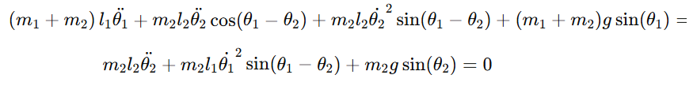

Откройте хаотическую природу движения двойного маятника!
Қос маятник деп бірі екіншісінің ұшында ілінетін екі маятниктен тұратын жүйені айтады. Ол салмақ деп аталатын екі ілулі денеден және екі өзекшеден тұрады. Бұл күрделі, сызықты емес қозғалыспен сипатталатын екі еркіндік дәрежесі бар динамикалық жүйенің мысалы.
Қос маятниктің қозғалысын сипаттау үшін Ньютон заңдары немесе Лагранж тәсілі қолданылады. Лагранжды қолдану арқылы алынған теңдеулер келесідей болады:
Мұнда:
L жүйесінің лагранжианы кинетикалық энергия T мен потенциалдық энергия V арасындағы айырмашылық ретінде анықталады:
L = T - V
Бұл теңдеулерді шешу үшін Эйлер әдісі немесе Рунге-Кутта әдісі сияқты сандық әдістерді қолдануға болады. Осы әдістерді қолдана отырып, қос маятниктің қозғалысын модельдеуге болады, ол бастапқы шарттарға байланысты дұрыс немесе ретсіз болуы мүмкін.
Қос маятник - бұл бастапқы шарттардағы шамалы өзгерістердің өзі айтарлықтай басқа нәтижелерге әкелуі мүмкін хаотикалық жүйенің мысалы. Бұл хаос теориясын зерттеуді қызықты етеді.